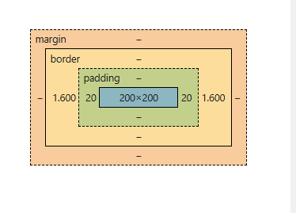

padding: la khoang cach ben trong , margin: la khoang cach ben ngoai, border: la duong vien

box-sizing có 2 giá trị cần quan tâm: content-box, và border-box
- content-box: giá trị default, lúc này width và height của phần tử thì sẽ chỉ áp dụng cho phần content.
Còn kích thước của border và padding sẽ được cộng thêm bên ngoài (Cách này khó kiểm soát layout)
border-box: Ngược lại, lúc này width và height của phần tử sẽ bao gồm cả kích thước của content + border + padding (Nên dùng, dễ kiểm soát layout hơn)